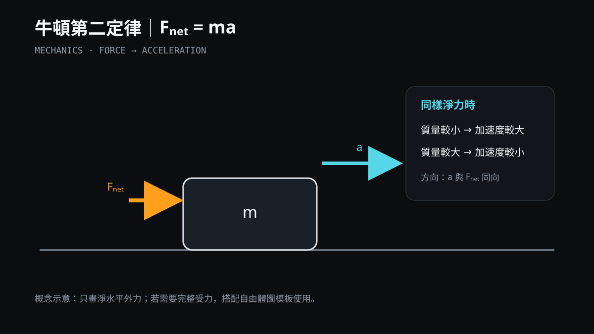
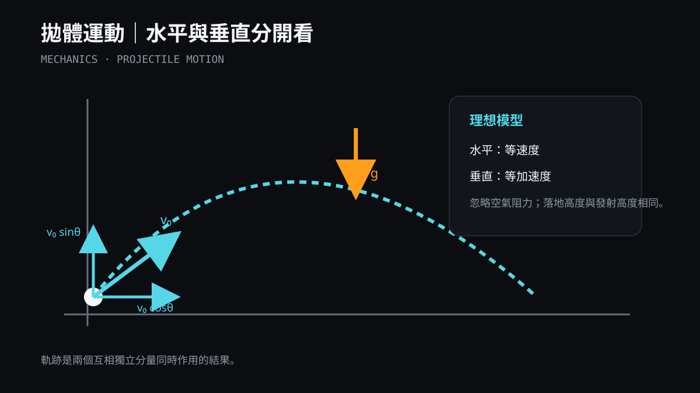
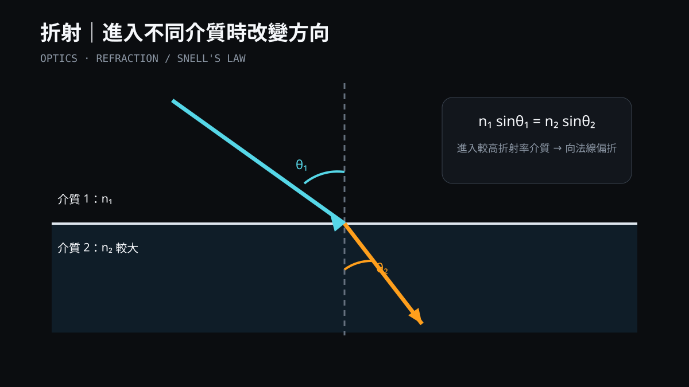
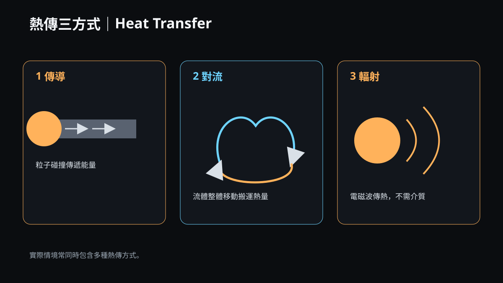
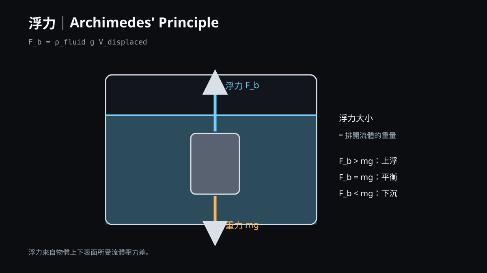

 01 / MECHANICS · 10 SVGMechanics力、運動、動量、能量、圓周運動、彈簧、力矩與簡單機械。F = maProjectileMomentumEnergy開啟 GalleryREADMEREADY FOR HANDOUT
 02 / WAVES & OPTICS · 8 SVGWaves & Optics波動基本量、疊加、駐波、都卜勒效應、反射、折射、透鏡與干涉。v = fλStanding WaveSnellLens開啟 GalleryREADMEREADY FOR HANDOUT
03 / ELECTRICITY & MAGNETISM · 10 SVGElectricity & Magnetism靜電、電場、等位面、電路、電容、磁場、洛倫茲力與電磁感應。CoulombKirchhoffCapacitorFaraday開啟 GalleryREADMEREADY FOR HANDOUT
 04 / THERMODYNAMICS & FLUIDS · 8 SVGThermodynamics & Fluids熱傳、相變、熱力學、P–V 圖、液體壓力、液壓、浮力與伯努力效應。ΔU = Q − WP = ρghBuoyancyBernoulli開啟 GalleryREADMEREADY FOR HANDOUT
05 / MODERN PHYSICS · 11 SVGModern Physics量子、原子、光譜、放射性、核能、粒子碰撞與重力波。E = hfλ = h/pE = mc²GW Chirp開啟 GalleryREADMEREADY FOR HANDOUT
06 / MEASUREMENT · 8 SVGMeasurement & ExperimentSI、量綱、準確度與精密度、不確定度、誤差棒、擬合與資料流程。SIUncertaintyError BarLinear Fit開啟 GalleryREADMEREADY FOR HANDOUT